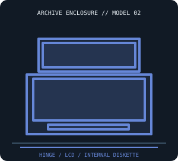

[ IDENTIFIED SYSTEM // IBM PC CONVERTIBLE 5140 ]
IBM PC Convertible 5140 Portable Enclosure
Battery-capable clamshell portable with a hinged monochrome LCD and keyboard; approximately 12.9 × 11.7 × 2.4 in (W × D × H) when closed.

MODEL / REVISION BOUNDARY: The Convertible 5140 has multiple submodels and display/drive configurations; identify type/model and battery/drive option before ordering replacement parts. It is not an IBM PCjr or later ThinkPad.
Enclosure specifications
| Exact model / generation | IBM PC Convertible Type 5140, first generation (1986); identify the full 5140 model code and installed options. |
|---|---|
| External dimensions | About 12.9 × 11.7 × 2.4 in (W × D × H), closed; dimensions exclude optional carrying case and vary slightly with feet/latch condition. |
| Form factor / board layout | Clamshell portable; IBM-specific planar/display/keyboard arrangement in a nonstandard molded shell, no desktop motherboard standard. |
| Proprietary power supply | External IBM AC adapter plus internal rechargeable battery; the adapter connector/polarity and battery pack are model-specific. No internal ATX PSU. |
| External bays / ports | No external drive bay; an optional external diskette unit/docking accessories use IBM-specific connectors and are separate equipment. |
| Internal bays / mounts | One built-in 3.5-inch diskette drive in equipped configurations; internal fixed-disk bay is not standard. |
| Service / compatibility | Use the 5140 Guide to Operations and Hardware Maintenance and Service manual. Preserve LCD hinge/cable routing, battery contacts and the exact planar; never force an external diskette connector. |
| Revision identification | The Convertible 5140 has multiple submodels and display/drive configurations; identify type/model and battery/drive option before ordering replacement parts. It is not an IBM PCjr or later ThinkPad. |
Service, restoration & fit notes
Use the 5140 Guide to Operations and Hardware Maintenance and Service manual. Preserve LCD hinge/cable routing, battery contacts and the exact planar; never force an external diskette connector.
External IBM AC adapter plus internal rechargeable battery; the adapter connector/polarity and battery pack are model-specific. No internal ATX PSU.
- Record the full model/type label, board and power-supply assembly numbers, drive labels and manual revision before disassembly.
- Preserve original shields, brackets, hinges, feet, keyboard/CRT harnesses and proprietary fasteners with this exact enclosure; do not assume contemporary PC standards apply.
- Dimensions are approximate where noted; measure the actual specimen and leave clearance for cables, vents, lids/handles and attached peripherals.
Manufacturer & archival manual citations
- IBM Convertible 5140 Guide to Operations — Internet ArchiveIBM-published user guide for installation, operation and machine identification.
- IBM PC Convertible Hardware Maintenance and Service, 1st ed. (Feb. 1986) — Internet ArchiveIBM maintenance manual covering 5140 service and assemblies.
Manuals may cover only a stated revision or configuration; compare the title page and machine labels before applying procedures.